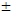

Gauges System Description - Control/Function
Self-Diagnostic Function
The gauge control module is equipped with a function to self-diagnose the inside circuits in the gauge control module.
Speedometer and Tachometer
The PCM *1 or TCM *2 provides a vehicle speed signal to the gauge control module using the F-CAN. Based on this input, the gauge control module displays the current vehicle speed in the speedometer. The PCM provides an engine speed signal to the gauge control module using the F-CAN. Based on this input, the gauge control module displays the current engine speed in the tachometer.
*1: M/T
*2: CVT
Fuel Gauge and Fuel Indicator
The gauge control module displays the fuel gauge based on input value from the fuel gauge sending unit (fuel tank unit). The low fuel indicator turns on in the event that indication of the fuel gauge becomes lower than the minimum tank fill threshold.
Multi-Information Display (MID) (With Multi-Information Display)
The multi-information display (MID) provides the ODO/trip meter, outside air temperature, average fuel economy, available cruising range, instant fuel economy, elapsed time, oil life, seat belt reminder, average speed, and the status of keyless access system. In addition, the diagnostic system displays the communication errors and the DTCs.
Information Display (Without Multi-Information Display)
The information display provides the ODO/trip meter, outside air temperature, average fuel efficiency, available cruising range, instant fuel economy, oil life, seat belt reminder, and the status of the keyless access system*. In addition, the diagnostic system displays the communication errors and the DTCs.
*: With keyless access system
ODO Meter and Trip Meter
The PCM *1 or TCM *2 provides a vehicle speed signal to the gauge control module using the F-CAN. Based on this input, the gauge control module tracks mileage for the odometer and trip meters. The mileage values are displayed in the information display or multi-information display (MID).
*1: M/T
*2: CVT
Ambient Meter (Except Si and Type-R)
The ambient meter shows real-time driving information by color on the both sides of the tachometer which promote fuel efficient driving. When the color is close to green, it means low fuel consumption driving. When the color is close to white, it means high fuel consumption driving.
Engine Coolant Temperature Gauge
The PCM provides an engine coolant temperature signal to the gauge control module using the F-CAN. When the engine coolant temperature is high, the gauge control module displays the warning in the multi-information display (MID).
Outside Temperature Gauge
The gauge control module uses measurements from the outside air temperature sensor or uses the temperature sensor signal from the climate control unit via the B-CAN. The outside air temperature indicator's displayed temperature can be recalibrated

5 deg.F ( 3 deg.C) to meet the customer's expectations.Average Fuel Economy Records, Average Fuel Economy/Instant Fuel Economy, Range, Elapsed Time Display, Average Speed Display
The gauge control module receives signals such as fuel consumption, driving distance, vehicle speed, and engine speed from the PCM via F-CAN. It calculates average fuel economy records, average/instant fuel economy, elapsed time *, average speed *, and range to display the results.
*: With multi-information display
Select Position
The TCM sends the transmission shift position/mode to the gauge control module, using the F-CAN.
Gauge Control Module Receives Information
The gauge control module receives information from each control unit via the F-CAN and the B-CAN to light or flash the indicators. The VSA modulator-control unit (indicator signal), TPMS switch *1, ECON switch *3, cruise control combination switch, washer fluid level switch, automatic brake hold switch, ACC combination switch, VSA OFF switch, CMBS OFF switch, adaptive damper mode switch *4, integrated drive-mode switch *5, and brake fluid level switch are connect directly to the gauge control module. The audio remote-HFL switch signal *2 is transmitted to the gauge control module via the LIN.
*1: Without multi-information display*2: With multi-information display*3: With ECON switch*4: With adaptive damper system*5: Si and Type-R
Keyless Access System Information (With Keyless Access System)
The gauge control module receives information from the body control module via the B-CAN to display status of the keyless access system.
Buzzer
The gauge control module includes a buzzer to provide the driver with audible warnings.
Illumination Control
The illumination brightness can be adjusted using the SEL/RESET knob. When the exterior lights are off, the system is off.
Unit Display Switching Function (Without Multi-Information Display)
Pressing the km/h, mph change knob for more than one second during the vehicle in the ON mode can switch the unit display.
Ambient Meter (Si and Type-R)
When shift up backlight setting is ON, the ambient meter blinks based on engine revolution and shift position *. And the ambient meter dims when +R * or Sport is selected with the ambient meter out of blinking range.
*: Type-R
| Shift Position Indicator | Blink Condition | OFF Condition | |
|---|---|---|---|
| Si | -- | 6, 350 rpm or more | 6, 330 rpm or less |
| Type-R | 1 | 6, 670 rpm or more | 6, 650 rpm or less |
| 2 | 6, 780 rpm or more | 6, 760 rpm or less | |
| 3 | 6, 850 rpm or more | 6, 830 rpm or less | |
| 4 | 6, 880 rpm or more | 6, 860 rpm or less | |
| 5 | 6, 910 rpm or more | 6, 890 rpm or less | |
| 6 | -- | Always off |
REV Indicator (Si and Type-R)
When REV indicator setting is ON, the REV indicator turns on based on engine revolution.
The function of the REV indicator is as shown in the table below.
| REV Indicator (Si) | ON Condition | OFF Condition |
|---|---|---|
| 4, 000 rpm or more | 3, 800 rpm or less | |
| 4, 250 rpm or more | 4, 050 rpm or less | |
| 4, 500 rpm or more | 4, 300 rpm or less | |
| 4, 750 rpm or more | 4, 550 rpm or less | |
| 5, 000 rpm or more | 4, 800 rpm or less | |
| 5, 250 rpm or more | 5, 050 rpm or less | |
| 5, 500 rpm or more | 5, 300 rpm or less | |
| 5, 750 rpm or more | 5, 550 rpm or less | |
| 6, 000 rpm or more | 5, 800 rpm or less |
| REV Indicator (Type-R) | ON Condition | OFF Condition |
|---|---|---|
| 4, 500 rpm or more | 4, 300 rpm or less | |
| 4, 750 rpm or more | 4, 550 rpm or less | |
| 5, 000 rpm or more | 4, 800 rpm or less | |
| 5, 250 rpm or more | 5, 050 rpm or less | |
| 5, 500 rpm or more | 5, 300 rpm or less | |
| 5, 750 rpm or more | 5, 550 rpm or less | |
| 6, 000 rpm or more | 5, 800 rpm or less | |
| 6, 250 rpm or more | 6, 050 rpm or less | |
| 6, 500 rpm or more | 6, 300 rpm or less |